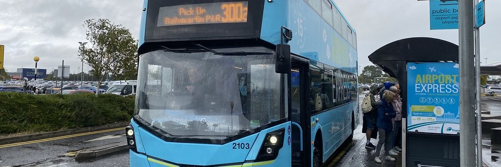

Belfast International is served by multiple airlines with the main airlines being Easyjet, Ryanair and Jet2. There is links to Belfast from many major UK airports and mutltiple European destinations. You can get from Belfast International Airport to Belfast City Centre in around 30 minutes by taking the Airport Express 300 bus, which runs frequently and is the cheapest option; taxis are available outside the terminal and offer a direct but more expensive ride; and private transfers can be pre‑booked for a smoother, faster arrival experience, all giving you straightforward ways to reach the heart of the city. Car rental facilties are available at the airport if you are considering renting a car.
Belfast City Airport has operations from multiple major airlines, such as Aer Lingus, Ryanair, British Airways and KLM, offering flights from most UK airports and multiple Euroeapen destinations. You can reach Belfast City Centre from Belfast City Airport in just a few minutes by hopping on the Airport Express 600 bus, which runs every 20 minutes and takes around 10 minutes to arrive in the city centre; you can also take a train from nearby Sydenham train station for a quick and budget‑friendly trip, though it requires a short walk from the terminal; taxis and private transfers are the fastest and most direct options, getting you into the city centre in about 10 minutes.
You can reach Belfast City Centre easily from Belfast Port after arriving by ferry, with the quickest option being a short taxi ride that takes around 10 minutes; the Metro 96 bus also runs between the port and the city centre for a low‑cost and convenient connection; and if you prefer to walk, it’s roughly a 30–40 minute stroll along well‑signposted routes that follow the waterfront into the heart of the city.
You can travel from Dublin Airport to Belfast easily using several options: the most popular is the direct Aircoach or Translink Goldline coach, both running frequently from outside the terminals and taking around two hours to reach Belfast City Centre; driving via the M1 and A1 is straightforward and usually takes about 90 minutes depending on traffic; taxis and private transfers offer convenience but are the most expensive choice. If you prefer rail, you can take a Dublin Bus or airport shuttle into Dublin Connolly Station and then board the Enterprise train to Belfast.
Northern Ireland is compact, well connected and incredibly easy to explore, with Belfast acting as a convenient hub for day trips and longer adventures. Regular train and bus services link the city with every major town and region, meaning you can reach the Causeway Coast, the Mournes, or the walled city of Derry-Londonderry in under a couple of hours. Whether you’re travelling for scenery, culture or coastline, journeys are straightforward and frequent, making it simple to head out in the morning and be back in Belfast by evening to enjoy Belfast's nightlife. With short distances, reliable transport and a growing network of routes, getting around Northern Ireland feels effortless, letting you experience the best of the region at your own pace. Timetables are visible at transport stops or online on the Translink website

With several airports, ferry connections, and quick access to other Irish transport hubs, Belfast is easy to reach
from most European countries and almost every UK airport. Northern Ireland’s growing public transport network makes getting around
Belfast, and the rest of the region, straightforward and convenient.
Tickets can be bought in person at bus or rail stops or through the Translink website online.